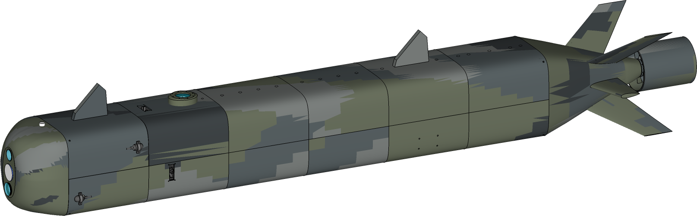
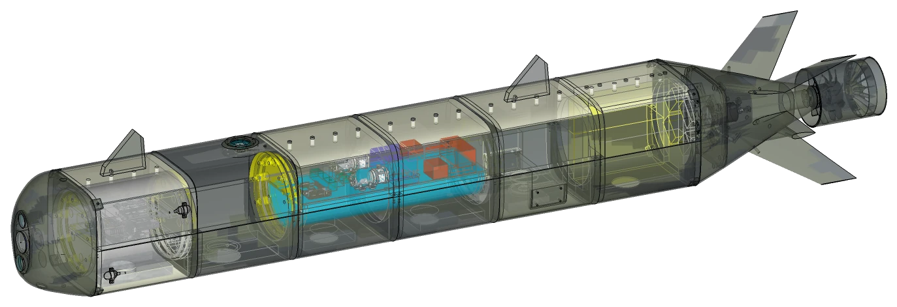
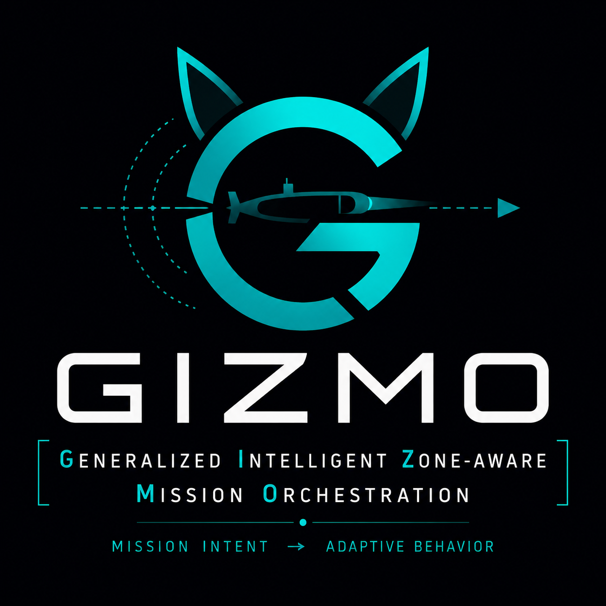
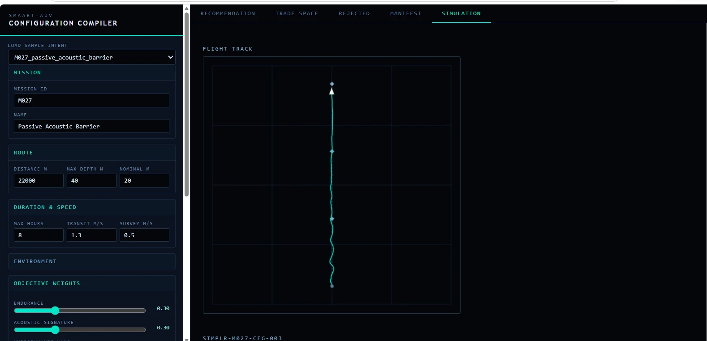
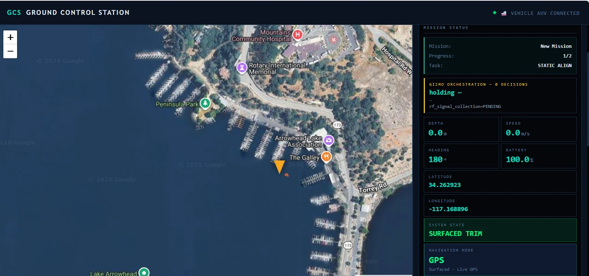

SOFTWARE-DEFINED UNDERWATER CAPABILITY
SIMPLR-AUV
Autonomous. Adaptable. Mission-Driven.
SIMPLR-AUV is a modular autonomous underwater vehicle and mission system built around reconfigurable hardware, deterministic mission orchestration, pre-deployment simulation, and an integrated browser-delivered operations environment.

A COMPLETE AUTONOMOUS MISSION SYSTEM
Mission Intent to Underwater Impact
Cognitive Vehicles integrates mission planning, vehicle configuration, simulation, autonomous execution, and post-mission analysis into one coherent system. SIMPLR-AUV is the first vehicle architecture built around that approach.
01PlanDefine mission objectives and geometry
→
02ConfigureCOMPILR selects a feasible configuration
→
03ValidateExercise the actual autonomy stack in simulation
→
04DeployExecute with SIMPLR-AUV
→
05AdaptGIZMO orchestrates mission behavior
→
06AnalyzeTurn mission data into engineering evidence
THE SIMPLR-AUV PLATFORM
Modular. Capable. Built for the Mission.
SIMPLR-AUV uses a free-flooding outer hull around two watertight electronics cylinders with a wet-mounted, pressure-tolerant energy module. The architecture separates mission sensing, vehicle management, payloads, and energy while preserving common power, network, and mechanical interfaces.
- Two-WTC vehicle architecture
- Wet-mounted pressure-tolerant energy module
- Interchangeable mission payload interfaces
- Designed for rapid reconfiguration
- Low-complexity, software-defined capability

~85 inLength
~10 inDiameter
50–60 mDesign depth
24+ hEndurance target
1.5+ m/sNominal speed target
GIZMO MISSION ORCHESTRATION
Mission intent becomes adaptive behavior.
GIZMO evaluates mission objectives, operating zones, vehicle state, observations, and available capabilities to determine what the vehicle should do next. Its mission logic is deterministic, auditable, and subordinate to independent vehicle-safety functions.
DeterministicExplainableBoundedReplayable


COMPILR CONFIGURATION COMPILER
Mission intent becomes a validated vehicle definition.
COMPILR evaluates mission objectives and hard constraints, screens candidate configurations, solves mass and trim properties, ranks feasible options, and validates the selected configuration through the same simulation environment used by the autonomy stack.
The public site describes COMPILR's function and engineering role without exposing its internal scoring, implementation details, or private source.
MISSION SYSTEMS IN ACTION
One environment from planning through analysis.
The operator-facing suite is browser delivered, role segmented, and built around the same mission vocabulary used by the vehicle.



OPEN SYSTEMS ENGINEERING
Capability should be replaceable without rebuilding the vehicle.
SIMPLR separates mission orchestration, guidance, navigation and control, hardware abstraction, payload services, and cloud operations so each layer can evolve independently.
Mission Layer
Objectives, operating zones, policy, and GIZMO orchestration.
Behavior Layer
Guidance plugins and mission tasks with bounded completion logic.
Vehicle Layer
Navigation, control, obstacle avoidance, and independent safety functions.
Platform Layer
Hardware abstraction, vehicle sensors, actuators, and common interfaces.
Payload Layer
Interchangeable acoustic, optical, environmental, and future mission payloads.
Simulation Layer
The production autonomy stack runs against simulation or physical hardware through the same abstraction boundary.
DEVELOPMENT STATUS
Software-first, evidence-driven development.
The autonomy stack, GIZMO, browser mission environment, and configuration tooling are being developed and exercised through simulation and hardware-in-the-loop workflows. Prototype vehicle hardware is in development; vehicle-level performance claims remain targets until controlled physical testing is complete.
ABOUT COGNITIVE VEHICLES
Autonomous systems built around mission reasoning.
Cognitive Vehicles LLC develops autonomous vehicle architectures, mission software, modular payload integration, simulation, and undersea robotic systems. SIMPLR-AUV is the company's principal development platform for mission-defined autonomy and rapidly reconfigurable underwater capability.
A MORE KNOWLEDGEABLE OCEAN
Build the next mission capability.
For research, integration, teaming, and program inquiries, contact Cognitive Vehicles LLC.
cognitivevehicles@gmail.com